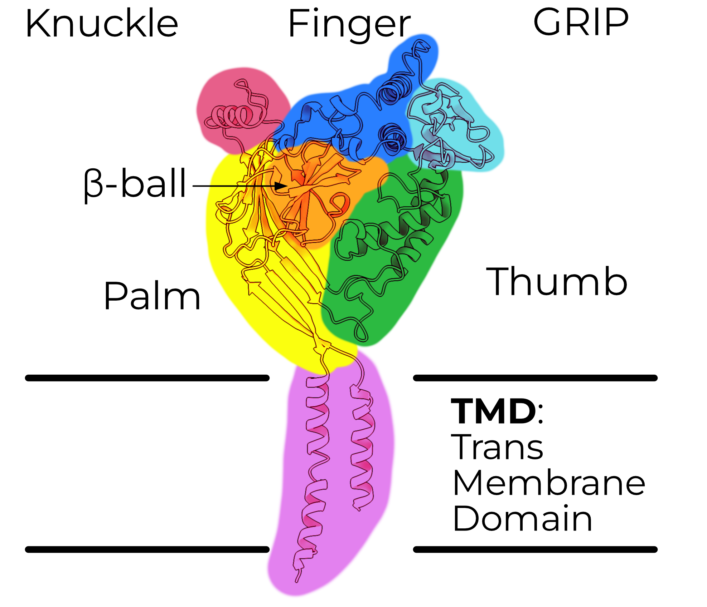
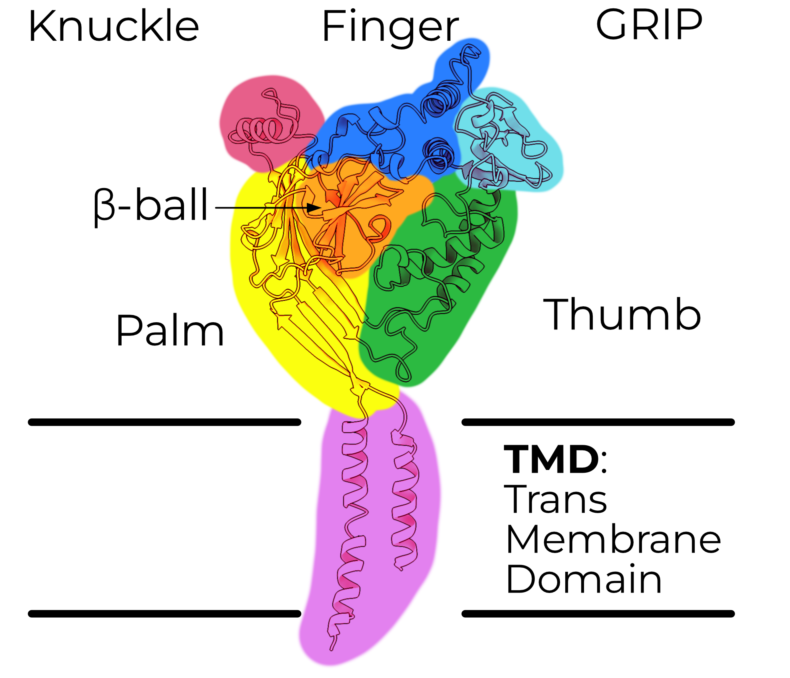
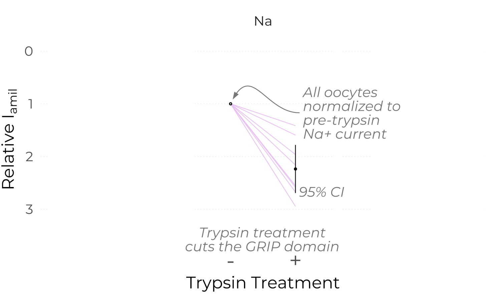

Hello world


We love salt
Photo by Mustafa Bashari on Unsplash
We love salt?
Photo by Ant Rozetsky on Unsplash
Do we love salt?

Edward Centrella at Your Brain on Sci
How do we
love salt?
Assuming coordination number of 6, from Mähler, J. & Persson, I. A Study of the Hydration of the Alkali Metal Ions in Aqueous Solution. Inorg. Chem. 51, 425–438 (2012).
Chris Briggs and Tatiana Rodrigues on Unsplash
Our taste of salt
We can discriminate salt concentrations
We can discriminate between sodium and potassium
And we do it all near-instantly!
Animation of ENaC in membrane here
I have a confession
I don't actually know much about taste...


My big questions
- How does ENaC filter so specifically for sodium over potassium?
- How exactly does the channel open and close?
What
we know
about ENaC currents
The Epithelial Sodium Channel


 

The Epithelial Sodium Channel

GRIP removal opens ENaC

GRIP removal opens ENaC

GRIP removal opens ENaC


Trypsin cuts purified ENaC


ECD is invariant with trypsin